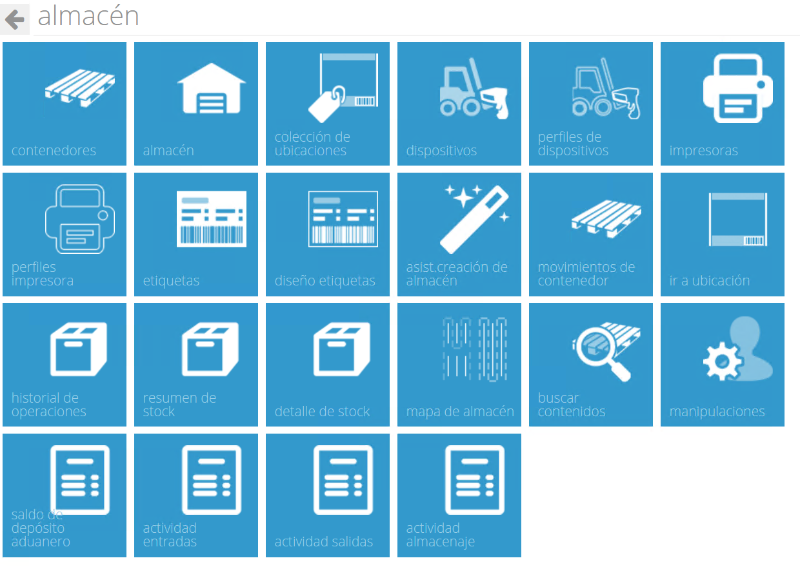

Almacén. Introducción¶
{kind=link}
El almacén es la pieza clave de todo SGA. Una correcta configuración del mismo facilita:
- La correcta distribución de los medios disponibles.
- La adecuada asignación de los trabajos.
- Un idóneo almacenamiento de la mercancía en función de sus características.
Podemos definir el almacén como el lugar físico donde se recibe, almacena y manipula mercancía para su posterior envío a los destinatarios correspondientes.
Podemos definir distintos elementos del almacén que son relevantes en todo SGA.
Ubicación¶
Es el lugar donde podemos almacenar mercancía identificada por uno o varios SSCC. Es la entidad mínima del almacén
Almacenamiento Vertical¶
El almacenamiento vertical es una agrupación de ubicaciones dentro del almacén que tienen en común alguna característica. La estantería es el sistema habitual de almacenamiento vertical aunque no el único (ej. almacenamiento apilado de palets).
Tipos de almacenamiento vertical:
- Estanterías convencionales.
- Estanterías compactas para palets.
- Estanterías dinámicas por gravedad para palets o para unidades sueltas.
- Estanterías móviles.
- Estanterías tipo Cantilever.
- Apilamiento de mercancía (palets, tubos, bobinas, …).